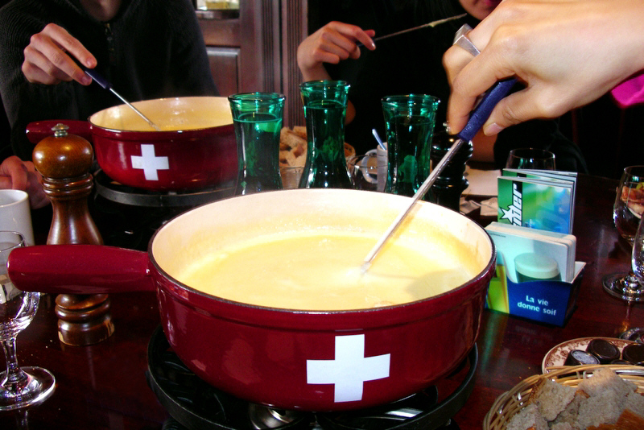
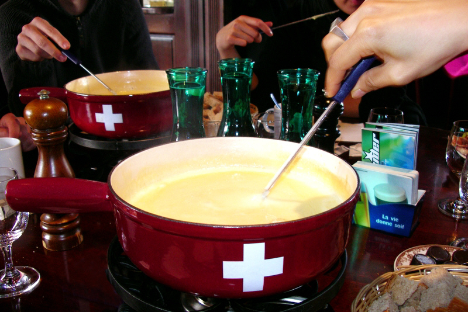

CULINÁRIA
 

RESUMO:
A culinária suíça é uma rica fusão de tradições que refletem as influências de países vizinhos, como França, Alemanha e Itália, além de ingredientes locais e práticas tradicionais. Cada região tem seus pratos característicos, mas o país é amplamente conhecido por alguns alimentos emblemáticos. Entre os pratos mais famosos estão o fondue e a raclette, ambos feitos à base de queijo derretido, geralmente compartilhados em reuniões sociais. O chocolate suíço também é um ícone mundial, valorizado pela alta qualidade e tradição na fabricação. Além disso, a Suíça é famosa por seus pratos à base de batatas, como o rösti, uma espécie de panqueca de batata que acompanha diversos pratos.
QUEIJOS E FONDUES:
O queijo é uma parte central da culinária suíça, e o país produz diversas variedades, como o Gruyère, Emmental e Appenzeller. O fondue, um dos pratos mais famosos, é feito derretendo uma mistura de queijos com vinho branco e alho, onde pedaços de pão são mergulhados. Esse prato é especialmente popular nos meses de inverno, aquecendo as pessoas nas regiões frias e montanhosas. A raclette, outro clássico, envolve derreter uma roda de queijo e raspá-lo sobre batatas, acompanhando com picles e cebolinhas em conserva.

CHOCOLATE:
A Suíça é um dos maiores produtores de chocolate do mundo e conhecida pela qualidade excepcional de seus produtos. Algumas das marcas de chocolate mais famosas e apreciadas globalmente, como Lindt, Toblerone e Nestlé, são suíças. O país desenvolveu várias técnicas inovadoras na produção de chocolate, como a suavidade do chocolate ao leite e a técnica de conchagem, que garantem uma textura rica e cremosa.
PRATOS REGIONAIS:
A Suíça é dividida em regiões que falam diferentes idiomas e têm culturas distintas, refletidas também na culinária. No sul, na parte de língua italiana, pratos como risotto e polenta são populares. Na parte de língua alemã, o rösti é um prato muito comum, feito com batatas raladas e fritas, geralmente servido com ovos, bacon ou salsichas. Já na região de língua francesa, há pratos como o papet vaudois (uma mistura de alho-poró e batatas, servido com salsicha) e o croute au fromage (uma fatia de pão coberta com queijo e assada).
BEBIDAS TÍPICAS:
A Suíça é conhecida por seus vinhos, especialmente os produzidos nas encostas do lago de Genebra, como o vinho branco Fendant, feito com a uva Chasselas. Além disso, há a produção de destilados como o kirsch (aguardente de cereja) e o absinto, que tem uma longa história na Suíça. Nos Alpes, o chá de ervas locais e o vinho quente são bebidas populares para combater o frio.